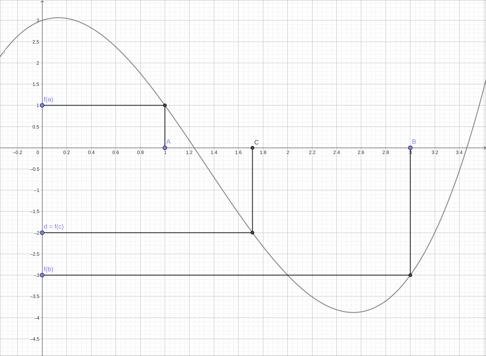

The Intermediate Value Theorem#
Discussion & Definitions#
Theorem: The Intermediate Value Theorem
Let \(f(x)\) be continuous over a closed, bounded (finite) interval \([a, b]\). If d is any real number between \(f(a)\) and \(f(b)\), there exists a number c in \([a, b]\) such that \(f(c) = d\).
The Intermediate Value Theorem has a nice pictorial representation, below. Start with a continuous function and an interval, \([a, b]\). Take vertical lines from a and b to the curve, then from there take horizontal lines to the y-axis. These are the values of \(f(a)\) and \(f(b)\). Now select any value d between \(f(a)\) and \(f(b)\) on the y-axis, call it d. From d, slide horizontally to the curve, then vertically to the x-axis. You now have a point c such that \(f(c) = d\).

The Intermediate Value Theorem Visualization#
Note
A couple notes about the Intermediate Value Theorem.
The theorem does not give the actual value of c, it simply says that c exists. To find c we need to solve the equation \(f(c) = d\), which could be difficult.
The theorem simply tells us that at least one value of c exists, it does not tell us how many values of c satisfy this expression. Again we would need to solve \(f(c) = d\) for all values of c that are in the interval, again this could be a difficult task.
Example: \(f(x) = x^{3} - 4 x^{2} + x + 3\) on \([1, 3]\)#
For the image we used above to demonstrate the Intermediate Value Theorem was the function \(f(x) = x^{3} - 4 x^{2} + x + 3\) on the interval \([1, 3]\). This was chosen arbitrarily for the image but we will take it through the process.
GeoGebra#
Input the function,
x^3-4 x^2+x+3
Evaluate the function at 1 and 3 by f(1) and f(3). The results are 1 and \(-3\).
We selected \(d = -2\), again rather arbitrarily. We know that the function is continuous and that d is between the values of \(f(a)\) and \(f(b)\), so we know that a c exists. We will go one step further and find the value of c. In GeoGebra, go to the next open cell and type in Solve, select Solve and in the parentheses type in f(x) = -2, this is the equation \(f(c) = d\) we need to solve. GeoGebra returns {x = -0.91223, x = 1.71354, x = 3.19869}. Only one of them x = 1.71354 is in our interval, so \(c = 1.71354\).
CLAE#
Input the function,
x^3-4*x^2+x+3
Using Algebra > Evaluate we can evaluate the function at 1 and 3. The results are 1 and \(-3\).
We selected \(d = -2\), again rather arbitrarily. We know that the function is continuous and that d is between the values of \(f(a)\) and \(f(b)\), so we know that a c exists. We will go one step further and find the value of c. Assuming the expression was in R1, type in R1 - (-2) or R1+2 into the CAS input bar and the resulting expression will be, \(x^{3} - 4 x^{2} + x + 5\). Now select Algebra > Solve, a dialog box will appear asking for the variable, use x and click OK. The result is,
CLAE will find exact solutions to equations when possible. Also, the solve option in CLAE always assumes that the expression is being solved for 0. This is why we took the equation \(f(c) = d\) and reformed it into \(f(c) - d= 0\) before solving. This expression is rather complicated and you may notice that there are imaginary numbers involved. We know that at least one of these solutions is a real number, in fact, all three are. We will approximate this answer by Algebra > Approximate. We get,
When the expression was simplified and approximated the imaginary numbers in sense cancelled out leaving three real solutions. Only one of these values is in our interval, so \(c = 1.7135379349684\).
Maxima#
Input the function,
kill(all);
f(x):=x^3-4*x^2+x+3
Using
f(1);
f(3)
we can evaluate the function at 1 and 3. The results are 1 and \(-3\).
We selected \(d = -2\), again rather arbitrarily. We know that the function is continuous and that d is between the values of \(f(a)\) and \(f(b)\), so we know that a c exists. We will go one step further and find the value of c. Run the command,
solve(f(x)=-2,x)
We get the following, as with CLAE it is an exact expression.
Getting numerical approximations in Maxima can be a little tricky, since we know that there is at least one real root we will use both the float command and the realpart command. Assuming that the above solution was %o4 run the following,
float(%o4);
realpart(%)
We get the following,
Only one of these values is in our interval, so \(c = 1.713537934968399\).